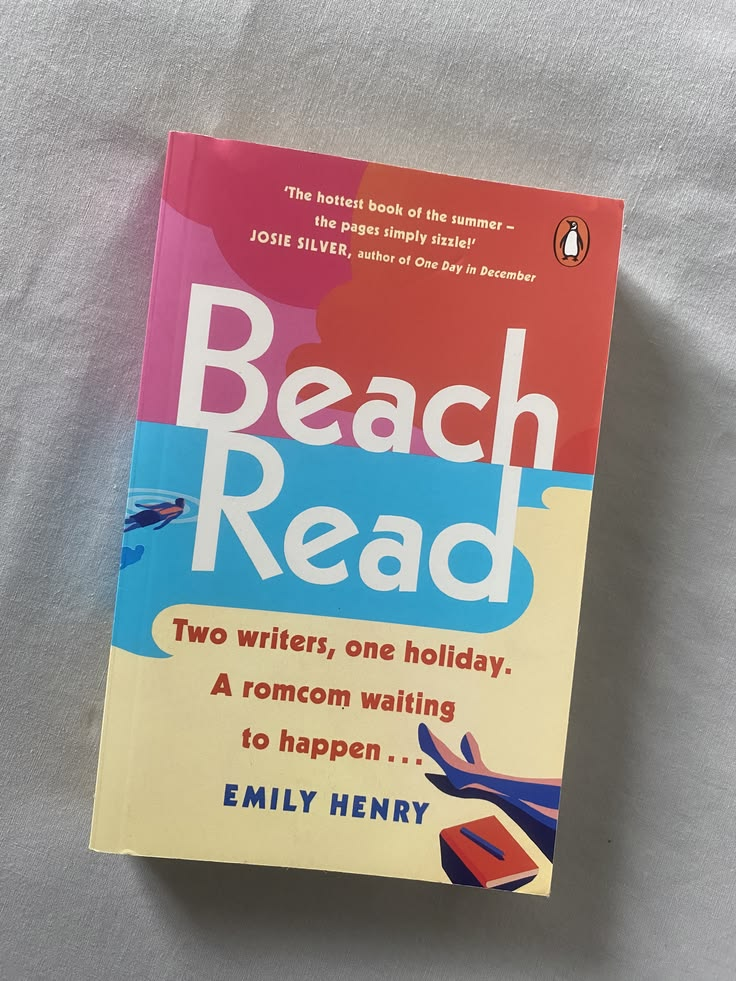

Beach Read
Emily Henry
January Andrews es una exitosa escritora de novelas románticas que ha dejado de creer en los finales felices. Augustus Everett, su vecino de verano, escribe literatura y desprecia las historias románticas. Ambos son escritores bloqueados que necesitan terminar un libro y, como desafío, intercambian géneros: Augustus intentará escribir una historia feliz mientras January se aventura en la literatura. Lo que empieza como una competencia termina acercándolos mucho más de lo que esperaban.